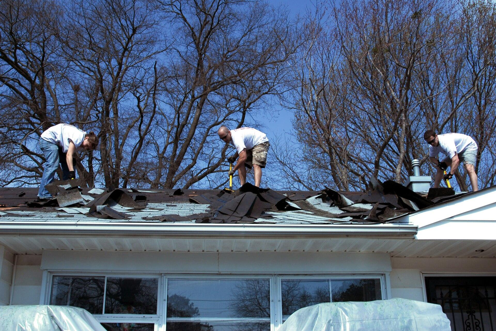
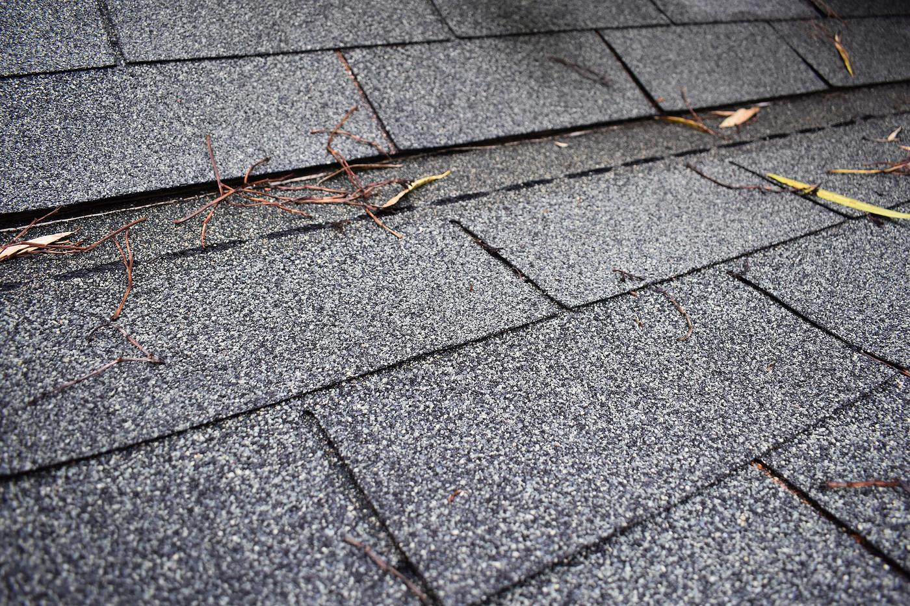
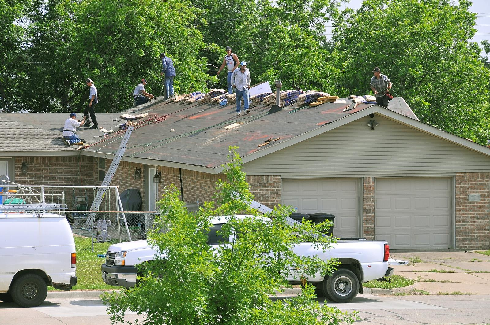
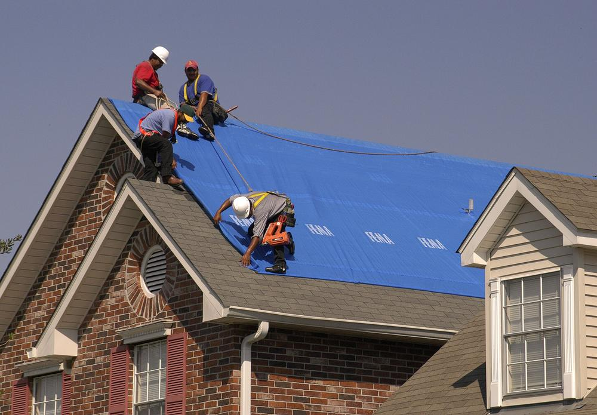

Most requested
Most requestedRoof replacement
Full tear-off down to the deck, rotten boards replaced, new underlayment, flashing, vents and shingles. Most homes are done in one to two days.
- Architectural shingle
- 3-tab
- Synthetic slate

Fayetteville, NC · Homes & businesses
Replacements, repairs and storm claims across Fayetteville and every town within 50 miles. Free inspections, and we meet your adjuster on the roof.
What we do
One crew for the whole job, from the first inspection to the last nail swept from your driveway.
Most requestedFull tear-off down to the deck, rotten boards replaced, new underlayment, flashing, vents and shingles. Most homes are done in one to two days.
 24/7
24/7Wind-lifted shingles, hail bruising, limbs through the roof. We tarp it the same day and photograph every hit for your insurance claim.
 40+ years
40+ yearsStanding-seam and screw-down panel for homes, farmhouses, barns and shops. Sheds heavy rain fast and holds up to hurricane gusts.
 Commercial
CommercialTPO, EPDM, PVC and modified bitumen for offices, warehouses, churches and retail. Repairs, coatings and full replacements.
 Free
FreeWe trace the water to the flashing, pipe boot or valley that's actually failing, then give you a written report with photos.
 Seamless
Seamless5" and 6" seamless aluminum formed on site, with downspouts and leaf guards in colors to match your trim.
 Storm repair
Storm repairVinyl, fiber cement and engineered wood siding, plus soffit, fascia and trim. Full replacements and storm repairs matched to the existing walls.
| Architectural asphalt shingle | 25–30 yr |
| 3-tab asphalt shingle | 15–20 yr |
| Standing-seam metal | 40–70 yr |
| Exposed-fastener metal | 25–40 yr |
| Synthetic slate · Natural slate | 40–100 yr |
| Cedar shake · Clay & concrete tile | 25–50+ yr |
| TPO single-ply | 20–30 yr |
| EPDM rubber | 25–30 yr |
| PVC single-ply | 20–30 yr |
| Modified bitumen · Built-up (BUR) | 15–30 yr |
| Commercial metal | 40+ yr |
| Silicone & acrylic coatings | +10–15 yr |
Typical manufacturer lifespans. Your inspection tells us what fits your building and budget.

BeforeAfterBefore & after
Shingles don't fail all at once. These are the signs we look for on every inspection.

Local crews
When a big storm comes through, out-of-state crews show up, sign contracts and leave. We live here, we answer the phone after the job, and our workmanship warranty means we come back if anything we built ever leaks.
Storm damage & insurance
Matthew and Florence both hit this region hard. If a storm finds your roof, here's how a claim goes with us.

Same-day tarpingStops further water damage and satisfies your policy's "prevent further loss" clause.
We check the roof, gutters, siding and attic and photograph every bit of wind or hail damage.
If water is getting in, we tarp it the same day.
You open the claim. We give you a photo report and a line-item scope to send your insurer.
We meet the adjuster on the roof and point out everything we found, so nothing gets missed.
New roof on, yard swept, warranty registered and any supplements filed so you get what your policy owes.
| Damage | What it looks like | Usually covered? |
|---|---|---|
| Hail | Dark bruises where granules are knocked off; dents on vents, gutters and flashing | Often |
| Wind | Creased, lifted or missing shingles; exposed nail heads; ridge cap blown off | Often |
| Fallen trees & limbs | Punctured decking, cracked rafters, crushed gutters | Often |
| Hurricane | Widespread wind damage plus driven-rain leaks; a separate hurricane deductible may apply | Check deductible |
| Age & wear | Curling, cracking and granule loss across the whole roof | Rarely |
General guidance only. Coverage depends on your policy and your insurer's findings.
Instant estimate
Pick a material and size. You'll get a working range now; a free inspection turns it into a firm quote.
Estimated installed price demo math
Demo pricing for illustration only. Real prices depend on decking, layers, ventilation, flashing and access. One square = 100 sq ft of roof.
Warranties
Terms below are demo placeholders. Swap in the real ones before launch.
If a leak traces back to how we installed it, we fix it free. Transfers once if you sell your home.
Top-tier shingle systems can carry up to 50-year material coverage when installed by a certified contractor. We register it for you.
No-dollar-limit warranties for TPO, EPDM and PVC systems run 15 to 30 years, backed by the membrane manufacturer.
Military & veterans discount demo
Active duty, veterans, Guard, Reserve and Gold Star families save 12% on any full roof replacement. PCS orders coming up? We can inspect, repair or replace before you list.
Service area
From Sanford to Lumberton, Southern Pines to Clinton. Distances are straight-line miles from Fayetteville.
Reviews
Demo placeholder reviews written for this mockup. Replace them with real Google reviews before launch.
"Hail hit our neighborhood in April. They met the adjuster, got the whole roof approved, and had new shingles on in a day."
"We PCS'd in six weeks and needed the roof done before listing. The military discount helped and the crew left the yard spotless."
"A limb came through our roof during a tropical storm. They had a tarp on it that evening and handled the claim from there."
FAQ
Don't see yours? Call and a real roofer will answer.
From the ground, look for dents on gutters, downspouts and roof vents. Those usually mean the shingles took hits too. Hail bruises are hard to spot without getting on the roof, so book a free inspection after any storm with hail bigger than a quarter.
Yes, with all major carriers. You file the claim, and we provide photos, a line-item scope and meet the adjuster on site. We never ask you to sign over your claim.
Most homes take one to two days. Larger, steeper, slate or tile roofs can take a week. Commercial projects are scheduled around your business hours.
Architectural shingles cost less up front and suit most homes. Standing-seam metal costs roughly two to three times more but can last twice as long and handles hurricane winds better. The estimator shows both.
Financing is available on approved credit. demo Terms and a lender partner are placeholders for this mockup.
Active-duty service members, veterans, Guard and Reserve, military spouses and Gold Star families. Bring a military ID or DD-214 to the inspection. demo
Free inspection
Tell us what's going on and we'll call to set a time, usually within one business day.